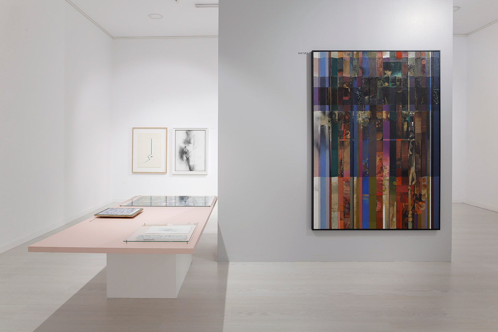
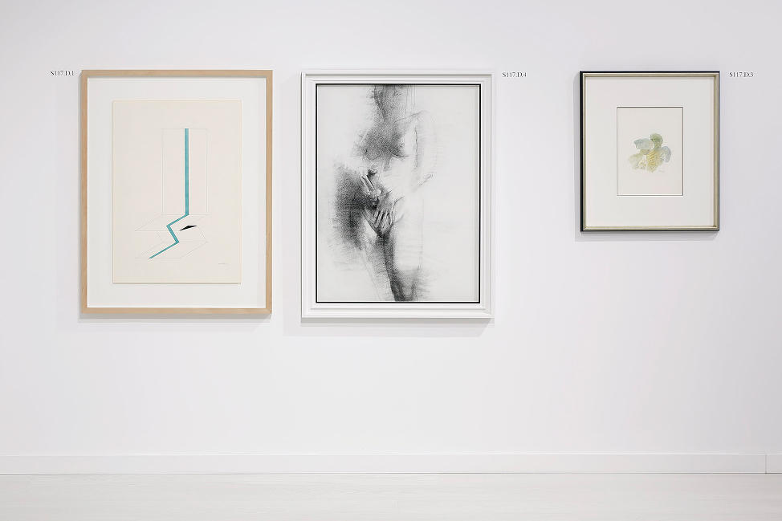
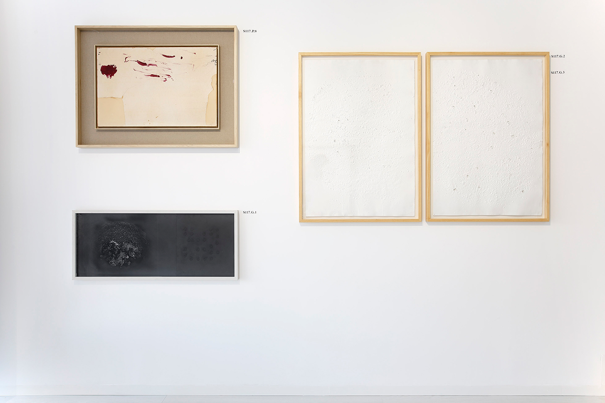
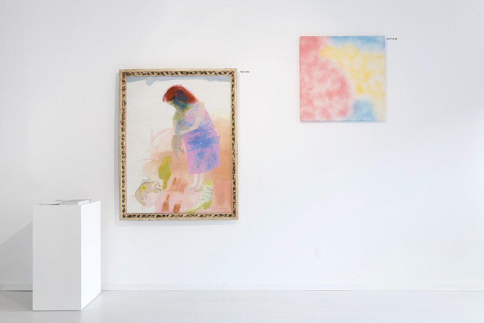
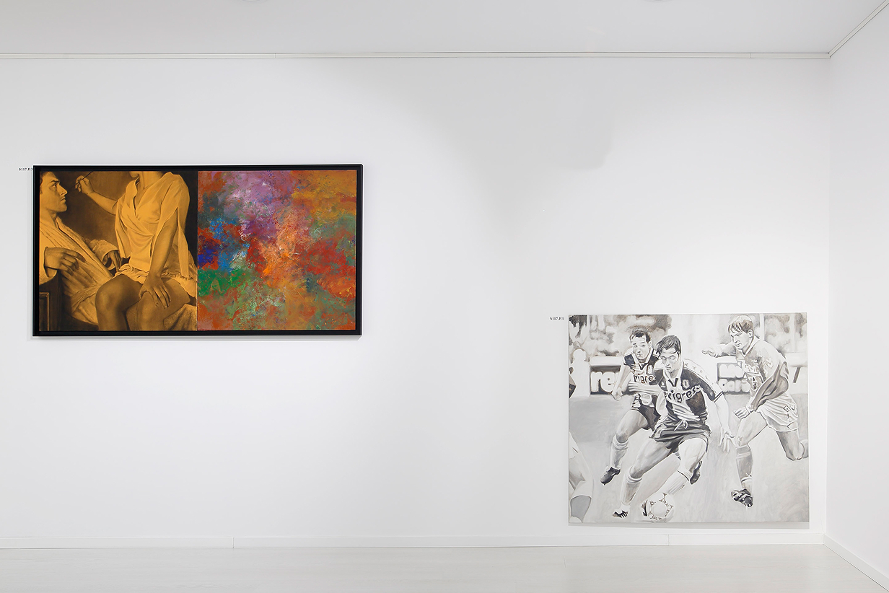

Taking into account a private collection, that comprises artworks selected by fortuity and pertinence, it is representative of different contemporary artists, mostly from Porto. From the gallery collection are proposed six ‘reading' strategies for these set of artworks, studies, prints and exercises, that belong to SALA 117. With an exemption from pretension, this exhibition allows the curious minds the possibility of looking throw a small selection of artworks form this collection, that at its scale can be compared to a curiosity cabinet.
From the selection of artworks that are part of the personal imaginary of the gallerists, were defined aesthetic and subjective options, that are revealing and characteristic of their own collection. From the subjectivity of its incorporation method, that is extremely personal and impulsive, are suggested analogies, symbiosis, agglomerations, coexistences and abstractions. From this personal imaginary, the viewer is made aware of a set of concepts and possible formulas for the interpretation of this collection, included in a selection of twenty-one artworks.
The six proposals of interpretation reflect some formal shreds of evidences of the exhibited artworks, and it also proposes a greater complexity in their relationship. As an example, the 1989 painting by Júlio Resende is exhibited side by side with a Ricardo Passaporte (2017) that lives of a present inherent to his representations. The iconography of the video captured image that describes trivial situations. The purity of the artwork's material in its expression. The effort of contemplation for the interpretation of classicism in formal representation and thoroughness. And also, some exceptions that deserve recognition at the gallery’s collection. Representations of the personal imagination of the collector.




SALA 117, Porto
15.12.2017 — 27.1.2018
Olinda Magalhães
Luís Pinto Nunes,
Luís Albuquerque Pinho
Inês Afonso Lopes
Luís Cepa
Filipe Braga
Ângelo de Sousa,
Antoni Tàpies,
Fernando Pinto Coelho,
Francisco Venâncio,
José Guimarães,
José Pedro Croft,
Jorge Pinheiro,
Júlio Resende,
Luís Demée,
Luísa Abreu,
Manuel Cargaleiro,
Mário Bismarck,
Ricardo Passaporte,
Sílvia Simões